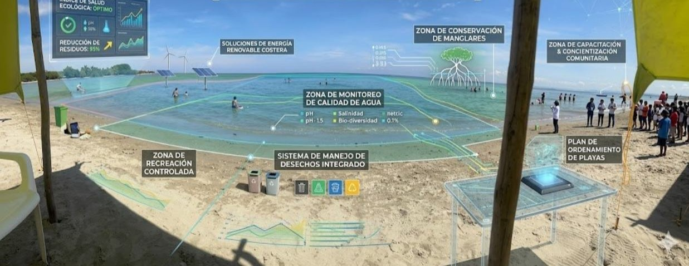

Ofrecemos soluciones integrales en el campo social y ambiental para empresas del sector público y privado.
01

Gestión Ambiental y Sostenibilidad
Planes de gestión socioambiental para proyectos de hidrocarburos, minero-energéticos, energía eólica, parques solares, infraestructura, hidroeléctricas, hídricas, viales, telecomunicaciones, entre otros.
Elaboración de DAA, EIA, MMA, PMA en los componentes socioeconómicos.
Elaboración y ejecución de Programas en Beneficio a las Comunidades.
PBCs y planes de gestión social.
Desarrollo de procesos de Consulta Previa.
Formulación e implementación de Educación ambiental.
Intervención en áreas de conflicto socioambiental.
Interventorías sociales para proyectos.
Estudios etnográficos en comunidades indígenas y afrocolombianas.
Componente social Informes de Cumplimiento Ambiental - ICAS.
Revisiones, acompañamiento y actualizaciones de Planes de Ordenamiento Territorial - POT, Planes Básicos de Ordenamiento Territorial - PBOT y Esquemas de Ordenamiento Territorial - EOT.
Planes de Ordenación y manejo de cuencas POMCAS y PORH planes de ordenamiento del recurso hídrico.
Planes de saneamiento y manejo de vertimientos PSMV.
Zonificaciones ambientales.
Formulación y actualización de planes de gestión integral de residuos sólidos.